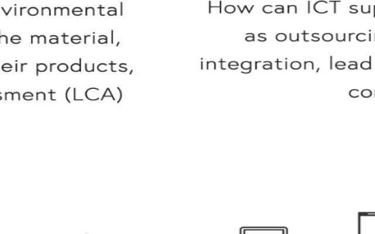
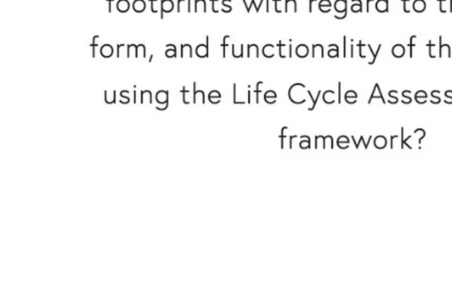
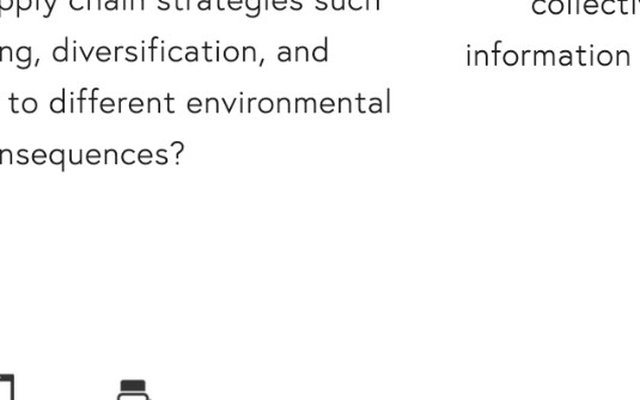

Responsible AI
Methods to identify and mitigate risks in sustainability-focused generative AI systems.
I study how AI, digital products, and technology supply chains interact with the environment—and develop practical methods for making them more responsible.
My work focuses on the decisions that shape the environmental footprint of AI, digital products, and global technology supply chains.

Methods to identify and mitigate risks in sustainability-focused generative AI systems.

Frameworks for connecting digital behavior with infrastructure, resource use, and climate impacts.

Life cycle assessment for electronics, semiconductors, circularity, and supply-chain decarbonization.